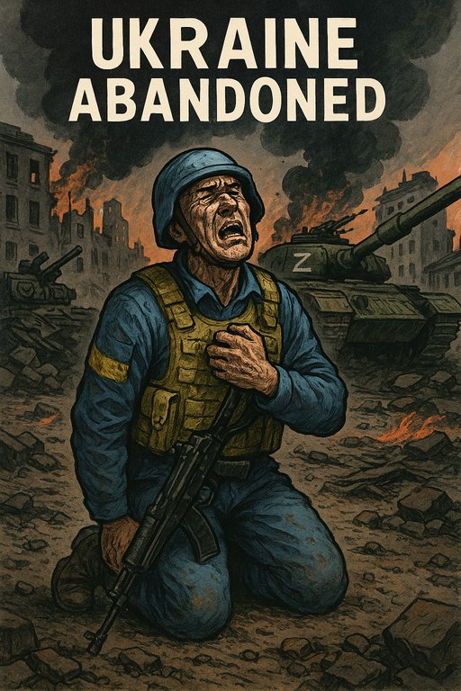

Publicado em 2025-07-01 18:51:35
Um lamento, uma oração, uma denúncia.
Em tempos não muito distantes, havia um país que ousou sonhar. Um país que, entre as ruínas soviéticas, ergueu a cabeça e sussurrou: “Queremos ser livres.”
Esse país chamava-se Ucrânia.
Mas os sonhos têm um preço, e o despertar pode ser brutal.
Quando os primeiros tanques russos atravessaram a fronteira, o mundo ficou em choque. Por cinco minutos.
Depois, vieram as cimeiras, os discursos, os capacetes e coletes à prova de balas enviados por países que gastam bilhões em exércitos mas hesitam perante a tirania.
Vieram os apoios, mas sempre com rodapés. A ajuda militar, mas sempre atrasada. A compaixão, mas com burocracia.
Enquanto isso, cidades ardiam. Famílias fugiam.
Crianças aprendiam o som das sirenes antes das palavras.
Hoje, passados mais de dois anos de guerra, o que resta?
Putin não está a ganhar só uma guerra. Está a provar ao mundo que o século XXI também pode ter impérios, ditadores, anexações e genocídios — se forem feitos com a frieza e cálculo certos.
E Macron? E Scholz? E Biden?
Conversam, telefonam, analisam. Mas nenhum deles está na linha da frente a enterrar amigos. Nenhum deles perdeu a casa, a mãe ou a infância sob um míssil hipersónico.
A liberdade, outrora um valor sagrado, tornou-se um slogan de campanha.
E a Ucrânia, que ousou desejá-la, tornou-se um aviso: quem desafiar o czar, paga com sangue.
Talvez ainda haja tempo para inverter esta tragédia. Mas cada dia de indecisão, cada tanque que não chega, cada hesitação ocidental, cava mais fundo o túmulo de um povo que apenas queria existir sem correntes.
A Ucrânia não é só um país.
É o espelho onde o mundo se vê — e talvez não goste do que vê.
Artigo de Francisco Gonçalves
Na terra onde as papoilas já não crescem,
as crianças dormem com olhos abertos e corações fechados.
Os tanques não trazem justiça, mas ruína.
E a Europa — assustada, hesitante — contempla o abismo
enquanto o sangue inocente escreve a História com lágrimas.
Não nos calaremos.
Ainda que as bombas abafem os sinos,
e os tiranos roubem o sol,
a Liberdade marchará descalça,
entre escombros e esperanças.Porque não há império que vença
a coragem de um povo livre,
nem silêncio que apague
o grito de um coração que ama.Glória aos que resistem!
Luz aos que caem!
E fogo no peito dos que esquecem.Que a Ucrânia —
e todos os povos em sofrimento —
sejam a semente de um mundo mais justo.Viva a Liberdade. Sempre.